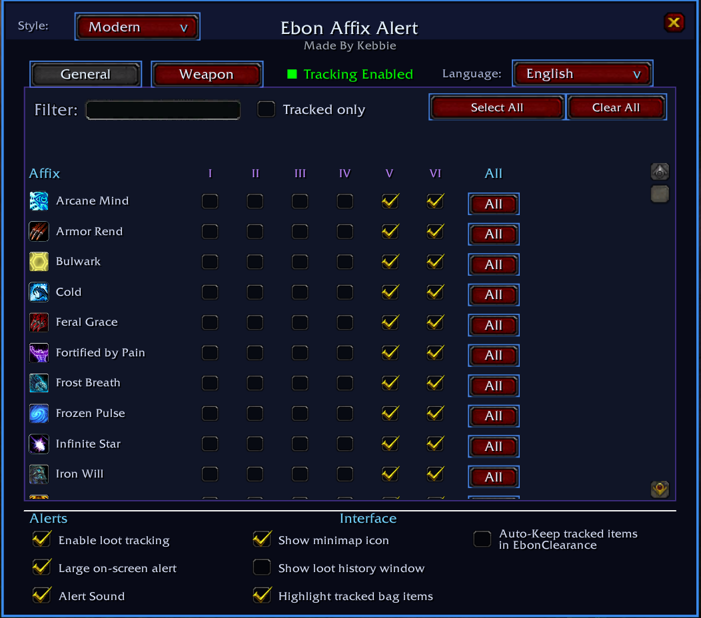

Ebon Affix Alert (EAA)
Ebon Affix Alert a addon for Project Ebonhold that watches newly acquired gear for selected Ebonhold affixes and alerts you when something you care about drops.
EAA is designed to make affix farming easier without requiring you to inspect every item manually - You choose the General affix ranks and Weapon affixes you want to track.

REQUIREMENTS
- World of Warcraft 3.3.5a client
INSTALLATION
- Extract the “EbonAffixAlert” folder into your WoW AddOns directory:
World of Warcraft\Interface\AddOns- Start the client or restart if already running
- Make sure Ebon Affix Alert is enabled in the AddOns list at character selection
- Log into Project Ebonhold
- Use
/eaaor the minimap icon to open the main settings window
QUICK START
- Type
/eaa - On the General page, tick the ranks you want EAA to watch
- On the Weapon page, tick the Weapon affixes you want to watch
- Leave “Enable loot tracking” enabled
- Optionally enable/disable the large on-screen alert, alert sound, minimap icon and Loot History
- Loot gear normally. EAA will alert only when a newly acquired item matches one of your tracked selections
FEATURES
Affix tracking
- Separate General and Weapon affix pages
- General affixes can be tracked rank-by-rank
- Each General row has an “All” control for selecting or clearing every available rank for that affix
- “Select Page” selects every option on the currently displayed page
- “Clear All” clears all tracked affixes
- Search/filter box for quickly finding an affix
- “Tracked only” filter for showing only your currently tracked affixes
Loot detection
EAA will detect when you loot an item with a tracked affix and alert you. Several safeguarding measure have been implemented to prevent false alerts.
Alerts
- Optional large on-screen alert
- Optional alert sounds
- General-affix alerts use the raid warning sound with a short anti-spam cooldown
- Weapon-affix alerts use a distinct sound so they are immediately recognisable
/eaa alertand/eaa wepAlertprovide end-to-end test alerts using your current alert settings
Project Ebonhold integration
Where available, EAA uses Project Ebonhold's ExtractionService.learnedAffixes data to obtain:
- canonical affix names
- affix spell IDs
- affix icons
- weaponOnly information
- currently published General-affix ranks
Affix tooltips
Hovering over affixes in the settings window shows the spell tooltip.
- Hover the icon/name of a General affix for an affix tooltip
- Hover an individual General rank checkbox for that specific rank's spell tooltip
- Hover a Weapon affix icon/name for its spell tooltip
Loot History
Loot History is an optional, movable and resizable window containing only items that actually triggered an EAA alert.
- Session-only by design; history is not permanently stored between logins
- Stores up to 50 entries
- Newest entries appear first
- Displays the looted item, tracked affix and affix icon
- Shift-click an entry to place its item link into chat
- Right-click an entry to remove only that history entry
- Hover an item entry for its normal item tooltip
- Clear button removes the current session history
- Optional Transparency mode makes only the Loot History background translucent while retaining readable text and controls
UI styles
EAA includes two UI styles selectable from the top-left of the main window:
Modern
A clean black/navy interface with blue accents and a compact modern layout.
Fantasy
A more Warcraft-inspired presentation with custom ornamental corners, an ornate title treatment, fantasy-styled buttons, rune-style checkboxes, ledger row treatments and a warmer fantasy colour palette.
The selected style is saved.
Minimap button
The minimap icon provides quick access to EAA:
- Left-click: open/close EAA settings
- Right-click: toggle loot tracking
- Ctrl + left-drag: move the minimap icon
- Shift + left-click: hide the minimap icon
The minimap tooltip also shows the current Loot History count. The icon can be restored from the main EAA settings window.
Interface Options integration
Interface -> AddOns -> EbonAffixAlertThis page provides:
- Master Enable EbonAffixAlert checkbox
- Shortcuts to common commands
- Export Tracked Config support tool
- Diagnostics and troubleshooting controls
SUPPORT AND DIAGNOSTICS
Export Tracked Configuration
“Export Tracked Config” opens a selectable text window listing the exact General ranks and Weapon affixes you currently track. This is intended primarily for attaching your configuration to a bug report.
Bug Report
“Bug Report” opens a selectable report containing useful troubleshooting information, including client/build information, EAA state, Project Ebonhold/ExtractionService state, cache/runtime counts, loaded addons and your tracked configuration.
Use Ctrl+A then Ctrl+C to copy the report.
Performance monitor
/eaa perf toggles a periodic EAA performance report in chat. It reports EAA memory usage and cache/runtime sizes using WoW's exposed addon APIs.
CPU usage is available only when WoW's script profiling is enabled. To enable it:
/console scriptProfile 1/reloadScript errors
/eaa scriptErrors toggles WoW's scriptErrors CVar. This is useful when reproducing a normal Lua error.
For protected-action/taint problems, WoW's taint log can also be enabled manually:
/console taintLog 2/reloadAfter reproducing the problem, inspect:
World of Warcraft\Logs\taint.logStatus
/eaa status prints a one-time health summary including tracking state, tracked-selection count, Loot History, active alerts, ExtractionService availability, server catalogue count, cached icons and relevant diagnostic CVars.
Icon rescan
/eaa rescanIcons asks Project Ebonhold for the current learned-affix catalogue again and refreshes EAA's affix/icon cache.
Clear cache
/eaa clearCache clears EAA's disposable runtime/persisted icon data and the short-lived duplicate-alert cache, then automatically requests a fresh Ebonhold icon scan.
It intentionally preserves tracked selections, settings, Loot History and the bag ownership baseline.
Debug
/eaa debug enables additional EAA event/loot diagnostics in chat. Leave this disabled during normal play unless troubleshooting a problem.
TROUBLESHOOTING
Addon does not appear
- Confirm EbonAffixAlert.toc is directly inside Interface\AddOns\EbonAffixAlert.
- Confirm the addon is enabled on the character-selection AddOns screen.
- Confirm you are using a compatible 3.3.5a Project Ebonhold client.
No affix icons/tooltips
Project Ebonhold's learned-affix catalogue may not have arrived yet. Try:
/eaa rescanIconsIf needed, use:
/eaa statusand check whether ExtractionService and learned-affix entries are available.
Unexpected loot alerts
Enable:
/eaa debugThen reproduce the issue and include the relevant EAA chat output plus a Bug Report.
Lua error popup
Use:
/eaa scriptErrorsor:
/console scriptErrors 1/reloadThen reproduce the problem and copy the complete error and stack trace.
"Interface action failed because of an AddOn"
This is usually a protected-action/taint issue rather than a normal Lua exception. Enable:
/console taintLog 2/reloadReproduce the problem, then provide Logs\taint.log along with an EAA Bug Report.
PROJECT / LICENSE
Ebon Affix Alert is an independent addon intended for use with Project Ebonhold. Project Ebonhold and World of Warcraft are separate projects/products and are not distributed with EAA.
Ebon Affix Alert is open source and distributed under the MIT License. See LICENSE.txt for the full license text.
The MIT License permits use, copying, modification, merging, publishing, distribution, sublicensing and/or sale of copies of the software, subject to retaining the copyright and license notice.
See CHANGELOG.txt for version-specific changes.